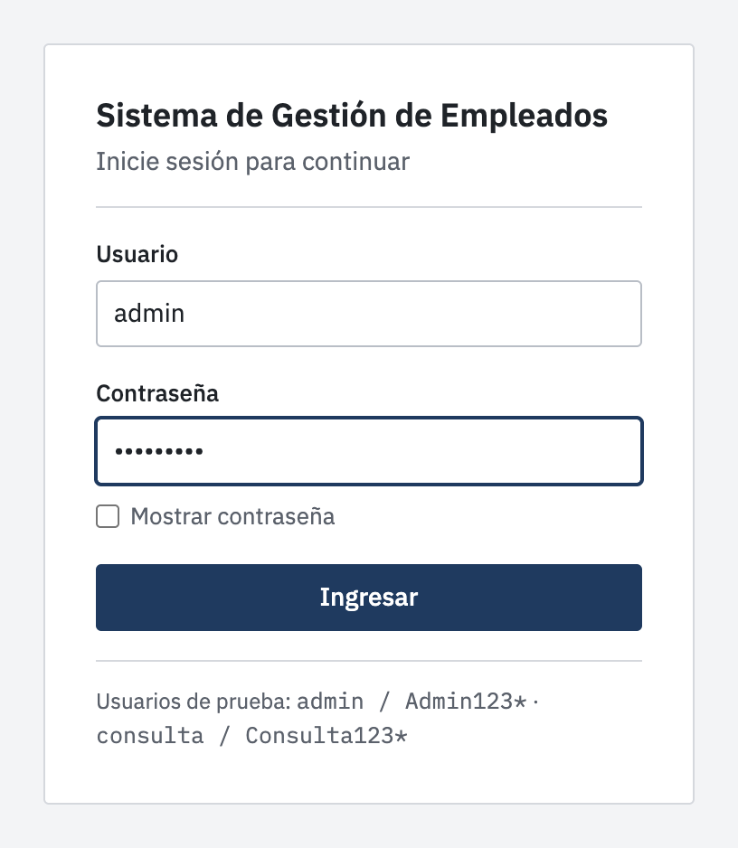
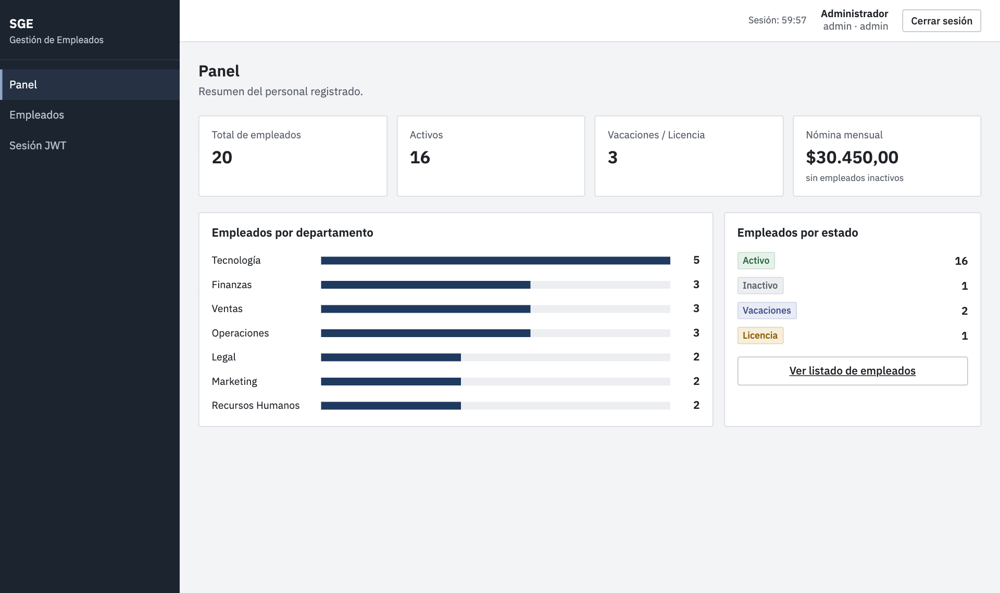
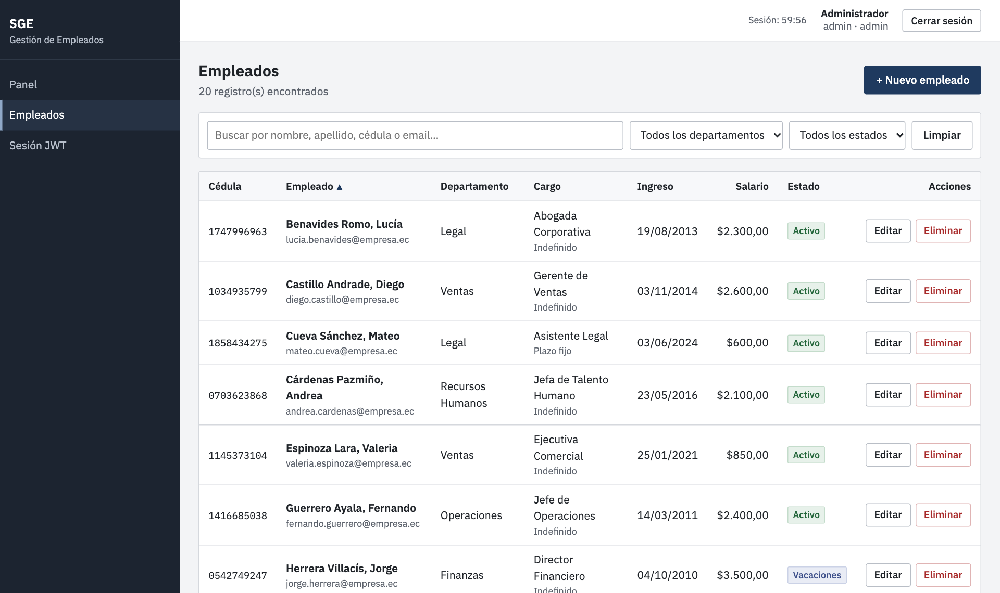
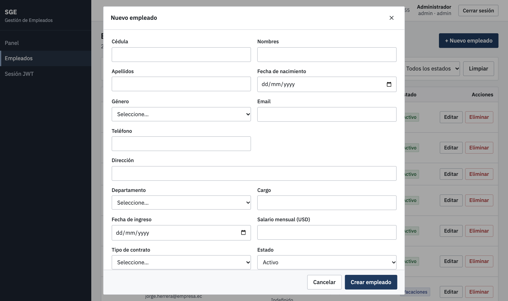
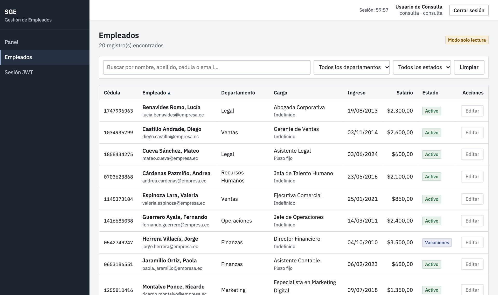
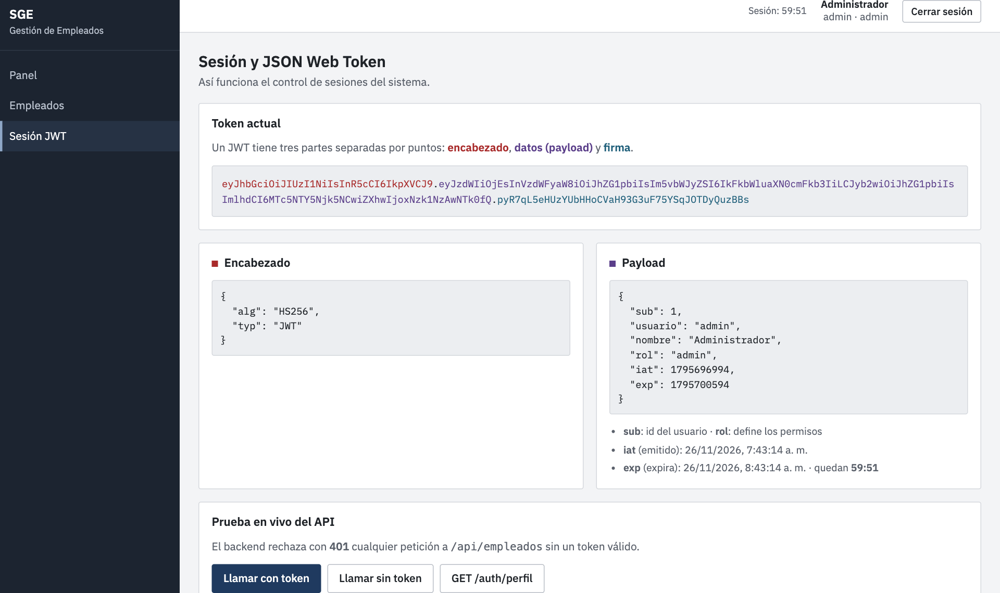

SGE permite registrar y administrar los datos del personal de una empresa. Para usarlo hay que iniciar sesión; el sistema entrega entonces un token JWT que identifica al usuario y que se envía en cada operación. Sin un token válido no se puede consultar ni modificar ningún dato.
| Rol | Puede hacer |
|---|---|
| admin | Ver, crear, editar y eliminar empleados |
| consulta | Solo ver y buscar |
Usuarios de prueba: admin / Admin123* y consulta / Consulta123*.

Después de ingresar se muestra el Panel. A la izquierda está el menú (Panel, Empleados, Sesión JWT). Arriba a la derecha aparecen el nombre y rol del usuario, el tiempo que le queda a la sesión (Sesión: mm:ss) y el botón Cerrar sesión.
El Panel resume el personal: total de empleados, activos, en vacaciones o licencia, nómina mensual y la distribución por departamento y por estado. El botón Ver listado de empleados lleva al listado.

En Empleados se ve la tabla con cédula, nombre y correo, departamento, cargo y contrato, fecha de ingreso, salario y estado.

El sistema revisa los datos antes de guardar y marca en rojo el campo con problemas:

Pulsar Eliminar en la fila del empleado. El sistema pide confirmación indicando el nombre; al pulsar Eliminar en el cuadro, el registro se borra definitivamente. Cancelar no hace ningún cambio.
Con el rol consulta se ve el panel y el listado, y se puede buscar, filtrar y ordenar, pero no aparece el botón Nuevo empleado ni Eliminar, y Editar está desactivado.
Aunque alguien intentara enviar una modificación directamente al servidor, el API la rechaza porque el rol que va dentro del token no es admin (error 403).

La opción Sesión JWT del menú muestra el token actual dividido en sus tres partes: encabezado, datos (payload) y firma. En el payload se ve el usuario, el rol, cuándo se emitió y cuándo expira.
En Prueba en vivo del API se puede llamar al servidor con token (responde 200 con los datos) y sin token (responde 401, acceso denegado). Así se comprueba que los datos están protegidos por el JWT.

| Mensaje | Qué significa / qué hacer |
|---|---|
| Usuario o contraseña incorrectos | Revisar los datos (se distinguen mayúsculas y minúsculas). |
| No se pudo conectar con el servidor | El API no está encendido. Consultar el manual de instalación. |
| Ya existe un empleado con esa cédula / email | Ya existe un empleado con ese dato; usar otro o editar el existente. |
| La sesión expiró | Volver a iniciar sesión. |